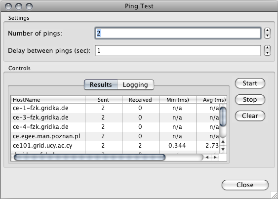

In the virtual folder named after the VO that is tied to your Grid Project you can browse the
various resources belonging to the VO. From the context menu of all resources that represent a
physical computer you will be presented with all the simple tests available.
In this dialog you can set how many pings you want to perform and the delay between the ping messages. When the "Start" button is clicked all the resources are pinged concurrently. You can stop this by clicking on the "Stop" button. In the "Logging" tab you can see the status of each individual ping messages sent.
In this dialog you can get the IP address of the selected resources. When the "Lookup" button is clicked all the resources are queried concurrently. You can stop this by clicking on the "Stop" button.